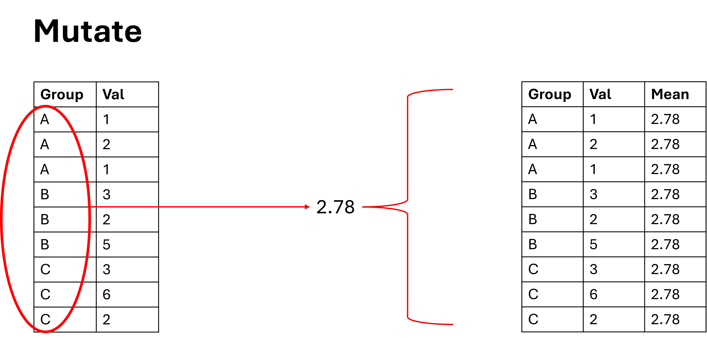
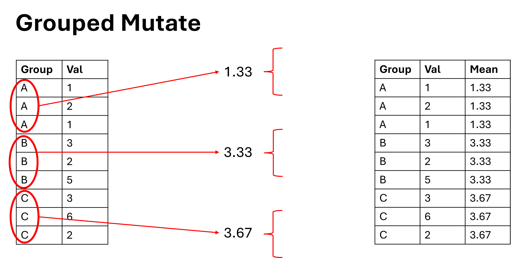
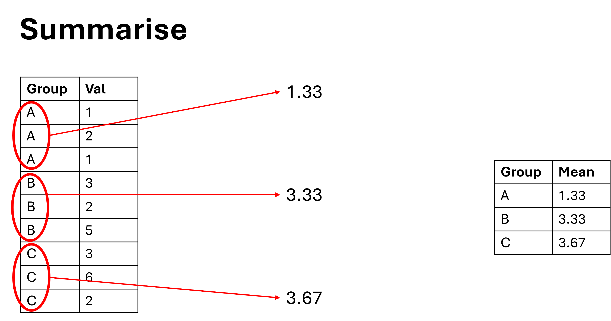

Code
#to load in data that comes with R, we can just call the data like it is a variable
our_data <- penguins
#if you want to see all of the data that comes with R you can run the following code:
#data()September 16, 2025
Welcome to “The Basics of Data”. In this session we are going to really start getting into the actual coding experience within the IDE (Positron or RStudio). We will explore some basic coding actions that you will encounter when working with scientific data, this includes:
To compliment this we will also touch on some important R concepts and coding “best practices” as we work through the points above.
The first thing we are going to do is load in some data. This data is not stored on your local machine, this data is shipped with the R programming language. When you download R you also download this dataset (along with a few others). These datasets are shipped with R for this exact purpose - testing and learning.
As we have covered before, if you wanted to load data from your local machine you would need to make sure the computer knows where to look. Positron helps you with this by allowing you to open a folder and basically call it “home” for the computer. RStudio does a very similar thing using a file called an Rproject file. When you load data from your local machine you will need to use specific functions to read the data in, the function changes depending on the type of data you are trying to read in.
The “<-” symbol is the same as “=”. To my knowledge no other language uses “<-”. You can press “Alt” + “-” as a shortcut to get this symbol.
There are lots of ways to visually/manually explore the data. If this was data you had on your local machine you could of course open it in excel and take a look around, however in this case it isn’t. Additionally, you may one day work with data that is too large to open in excel. So how else can we look at the data? There are two main coding methods. The first is head():
species island bill_len bill_dep flipper_len body_mass sex year
1 Adelie Torgersen 39.1 18.7 181 3750 male 2007
2 Adelie Torgersen 39.5 17.4 186 3800 female 2007
3 Adelie Torgersen 40.3 18.0 195 3250 female 2007
4 Adelie Torgersen NA NA NA NA <NA> 2007
5 Adelie Torgersen 36.7 19.3 193 3450 female 2007
6 Adelie Torgersen 39.3 20.6 190 3650 male 2007The second is str():
'data.frame': 344 obs. of 8 variables:
$ species : Factor w/ 3 levels "Adelie","Chinstrap",..: 1 1 1 1 1 1 1 1 1 1 ...
$ island : Factor w/ 3 levels "Biscoe","Dream",..: 3 3 3 3 3 3 3 3 3 3 ...
$ bill_len : num 39.1 39.5 40.3 NA 36.7 39.3 38.9 39.2 34.1 42 ...
$ bill_dep : num 18.7 17.4 18 NA 19.3 20.6 17.8 19.6 18.1 20.2 ...
$ flipper_len: int 181 186 195 NA 193 190 181 195 193 190 ...
$ body_mass : int 3750 3800 3250 NA 3450 3650 3625 4675 3475 4250 ...
$ sex : Factor w/ 2 levels "female","male": 2 1 1 NA 1 2 1 2 NA NA ...
$ year : int 2007 2007 2007 2007 2007 2007 2007 2007 2007 2007 ...However by far the easiest way to view and explore the data is using the built in data explorer. Simply click on the table icon next to your data in the variable pane off to the right of the IDE, or if you wanted to code it, use View() (with a capital v).
With the data explorer you can learn pretty much anything you want. It is also interactive; you can filter, sort, inspect, etc.
The data explorer is emphermeral - the changes you make to the dataset are not permanent and do not make changes to the actual data that you have loaded in.
After looking at the data you have probably already noted there are data types such as factor, string, int, num, etc. If you decide to go down the road of being a “coder” you will need to understand the distinctions between these very very well. However, at this stage simply being aware of data types and their basic interactions is probably enough.
As you might expect, certain data types don’t work well together. For instance, you can’t sum a string (text) and an integer (number) together - how would that even work?
Error in my_str + my_int: non-numeric argument to binary operatorThis is just about the only super critical aspect to be aware of and can be the cause of a lot of annoying errors. This is because you can enter a number (integer) as a string if you put the number in quotes:
Error in my_str + my_int: non-numeric argument to binary operatorThe important thing to realise here is that a dataframe might have a column full of numbers, but it is encoded as a string. If you don’t look closely it can catch you off guard.
This is also a good point to touch on creating objects and assigning. The format is as follows:
object(name) <- information(data)
Without assigning data to an object, the data is just printed to the console and is not “saved” in your environment. I.e. it would not be in the variable pane on the right of your IDE. Assigning data to an object that already exists overwrites the existing data within the object, be careful not to delete previous work this way. (You can add things to existing objects, but we will not cover that today).
Make sure to name objects well as it will save you a lot of time and confusion in the future. Naming objects follows a similar logic to what we have discussed before, the rules for naming objects are:
Some examples are as follows:
Data manipulation is the most common thing you will be required to do as a ecologist/scientist/consultant/etc. The basic workflow would be to:
Data manipulation is the first step in analysing the data, it means organisating your data, preparing your data, cleaning your data, and selecting necessary aspects of your data. Once you have done this, you can then analyse.
You can do all of these tasks in base R, but there are packages that have been specifically designed to improve R’s capacity/speed/legibility. We are going to use both tidyr and dplyr, these are both part of the “tidyverse” set of packages.
Together these packages allows us to do pretty much all the tasks we could ever possibly want.
To filter data we use the filter() function (duh). But we need to be clear that filter works on rows, that is to say that you define a condition, and the filter checks if that condition is met per row. An example will clarify this:
As you can see we are only keeping rows that have the species “Chinstrap”.
Use the data viewer to inspect this new dataset.
A common mistake is to use = (equals) when you mean == (is equal). The single equals sign = means “this is now”, the double equals sign == means “this is the same as”. It is a very subtle difference with big consequences. For example:
What this does is create an object called species with the contents of “Chinstrap”, it is saying that my_object is now “Chinstrap”. However, in the filter() function what we want to ask is which rows contain “Chinstrap” or which rows are equal to “Chinstrap” already. For example:
[1] FALSEUsing a single equals creates/overwrites an object. Using a double equals is a comparison between two objects:
[1] TRUETherefore, you can see that when you are filtering what you want to do is ask for rows where species is the same as “Chinstrap”, but if you use only one equals, what you are actually doing is saying the entire species column should now have the contents of “Chinstrap”.
There are a range of other operators (=, ==, <-, +, -, %%, <, >, !=, etc.) However, the = and == operators are essential not to get confused.
Conversely to filter, the select() function works on columns. As you might expect, you use the select() function to select the columns that you want:
Selecting columns is very simple to understand, but there are a few tricks to learn, some of the easiest are:
select(our_data, !c(species, bill_len))select(our_data, 1:3)select(our_data, starts_with("prefix_"))the c() inside the select() function stands for concatenate, it means to group up together. When we want a bunch of things to be recognised as one thing we use the c() function. This happens very often and will become second nature. Forgetting to use c() is a very common beginner mistake as it is not immediately intuitive to use it.
Together the filter() and select() functions allow us to cut our data down to only the rows and columns we are interested in. They form quite a powerful pair, and have an impressive amount of flexibility built in to allow for all kinds of shenanigans. We can demonstrate this below.
This is also a good time to introduce the “pipe” which looks like this |> or like this %>%. |> is the base R version of the pipe, in almost every instance I would reccomend using this version as it will do everything you need without having to install another package. %>% is from the magrittr package, it is the original pipe and existed long before |> did, you will see the %>% version in older code. It is technically more powerful, but the use cases where this matters are extremely limited.
The pipe is used to chain functions like filter() and select() together. In a basic sense, what the pipe does is replace the first argument in the function to its right with the object to the left of the pipe. For example, x |> f(1) is the same as f(x, 1). There are more complex ways to use the pipe, but they are not relevant right now.
The shortcut to enter a pipe is “ctrl” + “shift” + “m”.
Lets see the pipe in action:
#here is the old method
chinstrap_penguins <- filter(our_data, species == "Chinstrap")
cleaned_data_old_method <- select(chinstrap_penguins, c(species, bill_len))
#and here is now it is done using the new method
cleaned_data_new_method <- our_data |> filter(species == "Chinstrap") |> select(c(species, bill_len))We can see that for starters, less code needs to be written, but also less objects are created and the goal of the code is easier to understand. We can clearly see that the filter() and select() functions are meant to be working together to achieve something.
Lets write a slightly more complicated example:
A few things to note;
| operator, this means “or”. The filter will keep rows that meet either of the conditionsAfter filtering and selecting the data we want, the next thing we often want to do is perform some kind of transformation (AKA mutation) of the data. This is achieved using the mutate function. The mutate function is the ultimate workhorse, the amount of things you can do with it is insane, below are just some very basic examples:
#create a new column
our_mutated_data_1 <- our_data |>
mutate(MyNewColumn = "Hello")
#update an existing column
our_mutated_data_2 <- our_data |>
mutate(Species = "overwritten")
#calculate something based on other columns you can use operators like +, -, >, <, ==
our_mutated_data_3 <- our_data |>
mutate(LenAndDep = bill_len < bill_dep)And just to demonstrate, here is a more complicated example (you don’t need to follow this right now):
Open the data explorer and see if you can follow the logic of the mutate.
However, the mutate function on its own is still limited. This is because mutate() is applied per row. That is, if you have a dataframe with 10 rows and you write a mutate function, it will return a column with 10 rows. But… what if you want to calculate the mean value of all 10 rows? or what if you have two groups within the 10 rows, and you want to calculate a mean for each group?… And this problem is not just restricted to mutate(), you may also come across this issue when using the filter function among others.
We can visualise this as follows:

This is where the function group_by() comes in. We use group_by() to define groups in the dataframe to apply operations to. The group_by function doesn’t do anything on its own, and needs to be used in conjuction with other functions to have any affect. Below is an example of a grouped and ungrouped data transformation:
#demonstate grouping and mutating
our_grouped_data <- our_data |>
select(species, bill_len) |>
group_by(species) |>
mutate(avg_bill_len = mean(bill_len, na.rm = TRUE)) |>
ungroup()
#an additional demonstration without grouping
ungrouped_data <- our_data |>
select(species, bill_len) |>
mutate(avg_bill_len = mean(bill_len, na.rm = TRUE))Things to note about this code:
group_by() function as tag that is applied to the dataset, that tag will stick to the dataset forever, and will apply to all future functions unless you ungroup the data afterwards.mean() function, it does as you expect and returns the mean of the numbers it was provided. Because we grouped data by species, it will provide the mean bill length for each species.The grouping function allows us to perform operations on distinct groups in the data without having to physically split the dataset up into lots of different tables. However as you may have noticed, when we grouped and mutated the dataframe didn’t actually get any smaller (i.e. decrease in rows). This is a common confusion among beginner coders, you grouped the data up, why is it still the same size? Because decreasing rows can sometimes remove data that you were still interested in.
We can visualise this as follows:

Let’s imagine that you have a two step process:
Because the dataframe didnt get any smaller, this is actually very easy and we can continue to do rowwise operations.
If the data frame got smaller, this would be very hard indeed. However, sometimes we do want to reduce the dataframe.
Enter summarise(), the final function we will look at today. This function is very similar to mutate(), but its interaction with the group_by() function is slightly different. Where mutate will return the same number of rows as was entered, summarise will reduce the number of rows down to the bare minimum. Again, this is best seen with an example:
#demonstate grouping and mutating
our_grouped_data <- our_data |>
select(species, bill_len) |>
group_by(species) |>
mutate(avg_bill_len = mean(bill_len, na.rm = TRUE)) |>
ungroup()
#demonstate grouping and summarising
our_summarised_data <- our_data |>
select(species, bill_len) |>
group_by(species) |>
summarise(avg_bill_len = mean(bill_len, na.rm = TRUE)) The code is written in almost the same way, but the outputs are very different. Further, an important thing to realise with summarise, is it will naturally select only the relevant rows. For example, if you group by species, and summarise bill length, then it will only keep the species and bill length columns. This can catch beginners offguard as they wonder where their data went:
We can visualise this as follows:

Coding is a long journey, and you will learn as you go. However, there are some good habits to get into right from the start that will help you read, write, and understand your own code when you come back to it. These include:
And thats about it! See you next time.
If you like the content, please consider donating to let me know. Also please stick around and have a read of several of my other posts. You'll find work on everything from simple data management and organisation skills, all the way to writing custom functions, tackling complex environmental problems, and my journey when learning new environmental data analyst skills.
A work by Adam Shand. Reuse: CC-BY-NC-ND.
adamshand22@gmail.com
This work should be cited as:
Adam Shand, "[Insert Document Title]", "[Insert Year]".